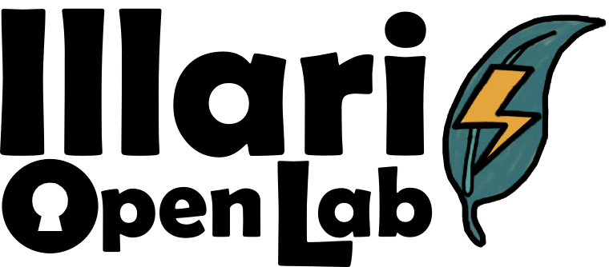

Con tus manos
?
Con tus manos
🤏 Pinza sobre un átomo: agárralo y estíralo.
✊ Puño y mueve la mano: gira la molécula.
☝️ Señala con el índice y mueve la mano: mueve la molécula.
✌️ Acerca o aleja la mano: zoom.
Cargando…